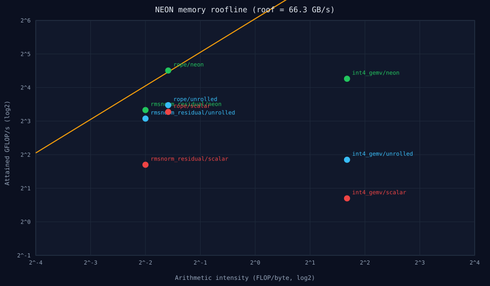

PerfBench · ARM64 NEON + WGSL
Anthropic-PerfBench
Fused RMSNorm+residual, in-place RoPE, and group-wise INT4 GEMV across three optimization iterations.
3.09×RMSNorm NEON vs scalar
2.35×RoPE NEON vs scalar
11.83×INT4 GEMV NEON vs scalar
66.31 GB/smeasured copy bandwidth

| Kernel | Scalar | NEON | Speedup |
|---|---|---|---|
| RMSNorm+residual | 6.454 ms | 2.087 ms | 3.09× |
| RoPE | 1.733 ms | 0.738 ms | 2.35× |
| INT4 GEMV | 20.686 ms | 1.748 ms | 11.83× |
Apple Silicon NEON results. OCI Ampere perf counters and WebGPU timings not run; roofline caveats are documented in RESULTS.md.
Measured local evidence only. No deployment, customer, or trained-weight claim is made unless explicitly stated.